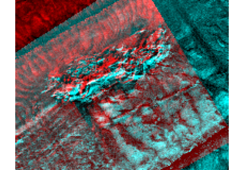

Theory#
Why sidescan imagery looks the way it does. Each page takes one idea: it states the physics, with the formula and a diagram, then measures the idea on a real, openly licensed recording, so every number can be checked.
The Examples show how to do a task with sidescanpy; these pages explain the physics behind the steps.
Every page is a script in examples/theory/ that runs when this site
is built, on the recordings listed in Example data. Run one
yourself with an output directory:
python examples/theory/plot_shadow_height.py out/
Slopes, relief and layover


Where the towfish is: navigation and layback
Where the towfish is: navigation and layback